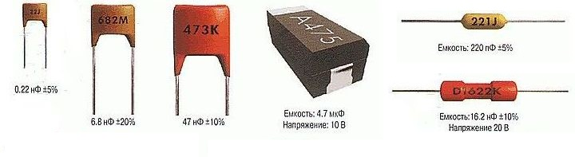
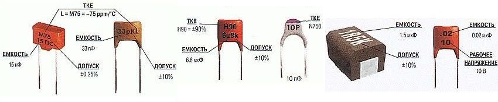

Маркировка импортных конденсаторов
Маркировка емкости тремя цифрами
- Первая цифра означает первую цифру емкости
- Вторая цифра - вторую цифру емкости
- Третья цифра означает число нулей, чтобы показать значение емкости конденсатора в pF.
- Буква после цифр обозначает допуск и напряжение (табл. 1).
Если емкость конденсатора менее 10 пФ, то последняя цифра может быть "9". При емкостях меньше 1 пФ первая цифра "0". Например: "010" означает 1 пФ.
Таблица 1
| Код | Допуск, % | Код | Допуск, % | |
|---|---|---|---|---|
| E | 0,005 | H | 2,5 | |
| L | 0,01 | J | 5 | |
| P | 0,02 | K | 10 | |
| W | 0,05 | M | 20 | |
| B | 0,1 | N | 30 | |
| C | 0,25 | Q | -10 ... +30 | |
| D | 0,5 | T | -10 ... +50 | |
| F | 1 | S | -20 ... +50 | |
| G | 2 | Z | -20 ... +80 |
Таблица 2
| Код | Напряжение |
|---|---|
| m | 25 В |
| l | 40(50) В |
| a | 63 В |
| b | 100 В |
| c | 160 В |
| d | 250 В |
| e | 400 В |
| f | 630 В |
| h | 1000 В |
| i | 1600 в |
| нет маркировки | 500 В |
Таблица 3
| код | пикофарады, пФ, pF | нанофарады, нФ, nF | микрофарады, мкФ, µF |
|---|---|---|---|
| 109 | 1,0 пФ | ||
| 159 | 1,5 пФ | ||
| 229 | 2,2 пФ | ||
| 339 | 3,3 пФ | ||
| 479 | 4,7 пФ | ||
| 689 | 6,8 пФ | ||
| 100 | 10 пФ | 0,01 нФ | |
| 150 | 15 пФ | 0,015 нФ | |
| 220 | 22 пФ | 0,022 нФ | |
| 330 | 33 пФ | 0,033 нФ | |
| 470 | 47 пФ | 0,047 нФ | |
| 680 | 68 пФ | 0,068 нФ | |
| 101 | 100 пФ | 0,1 нФ | |
| 151 | 150 пФ | 0,15 нФ | |
| 221 | 220 пФ | 0,22 нФ | |
| 331 | 330 пФ | 0,33 нФ | |
| 471 | 470 пФ | 0,47 нФ | |
| 681 | 680 пФ | 0,68 нФ | |
| 102 | 1000 пФ | 1 нФ | |
| 152 | 1500 пФ | 1,5 нФ | |
| 202 | 2000 пФ | 2 нФ | |
| 222 | 2200 пФ | 2,2 нФ | |
| 332 | 3300 пФ | 3,3 нФ | |
| 472 | 4700 пФ | 4,7 нФ | |
| 512 | 5100 пФ | 5,1 нФ | |
| 682 | 6800 пФ | 6,8 нФ | |
| 103 | 10000 пФ | 10 нФ | 0,01 мкФ |
| 153 | 15000 пФ | 15 нФ | 0,015 мкФ |
| 223 | 22000 пФ | 22 нФ | 0,022 мкФ |
| 333 | 33000 пФ | 33 нФ | 0,033 мкФ |
| 473 | 47000 пФ | 47 нФ | 0,047 мкФ |
| 683 | 68000 пФ | 68 нФ | 0,068 мкФ |
| 104 | 100000 пФ | 100 нФ | 0,1 мкФ |
| 154 | 150000 пФ | 150 нФ | 0,15 мкФ |
| 224 | 220000 пФ | 220 нФ | 0,22 мкФ |
| 334 | 330000 пФ | 330 нФ | 0,33 мкФ |
| 474 | 470000 пФ | 470 нФ | 0,47 мкФ |
| 684 | 680000 пФ | 680 нФ | 0,68 мкФ |
| 105 | 1000000 пФ | 1000 нФ | 1 мкФ |
Маркировка емкости четырьмя цифрами.
Эта маркировка аналогична описанной выше, но в этом случае первые три цифры определяют цифры емкости, а последняя — количество нулей для получения емкости в пикофарадах. Например: 1622 = 16200 пФ = 16.2 нФ.
Буквенно-цифровая маркировка емкости
На некоторых типах значение емкости конденсатора напечатано непосредственно на корпусе без всякого множителя. В этом случае буквы p, n, µ, m заменяют десятичные запятые и соответствующую приставку:
- p - пико,
- n - нано,
- µ - микро,
- m - милли.
Буква "R" используется в качестве десятичной запятой. Если перед буквой "R" стоит ноль, то емкость выражается в пикофарадах. Если перед буквой "R" не стоит ноль, то емкость выражается в микрофарадах.
Примеры такой кодировки приведены в таблице 4.
Таблица 4
| Код | Емкость |
|---|---|
| 0R5 | 0,5 пФ |
| p50 | 0,5 пФ |
| 1p5 | 1,5 пФ |
| 15p | 15 пФ |
| 150p | 150 пФ |
| 1n5 | 1,5 нФ |
| 10n | 10 нФ |
| 150n | 150 нФ |
| R47 | 0,47 мкФ |
| 1µ5 | 1,5 мкФ |
| 6R8 | 6,8 мкФ |
| 15µ | 15 мкФ |
| 150µ | 150 мкФ |
| 1m5 | 1,5 мФ |
| 15m | 15 мФ |


Рис. 1 - Примеры кодовой маркировки конденсаторов
Цветовая маркировка
Цветовая маркировка конденсаторов (табл. 5) в настоящее время она считается устаревшей, но всё ещё используется. Первые две цифры - емкость, третья - количество нулей, четвёртая - допуск, пятая - номинальное напряжение.
Таблица 5
| Цвет | Значение |
|---|---|
| Чёрный | 0 |
| Коричневый | 1 |
| Красный | 2 |
| Оранжевый | 3 |
| Жёлтый | 4 |
| Зелёный | 5 |
| Голубой | 6 |
| Фиолетовый | 7 |
| Серый | 8 |
| Белый | 9 |
| коричневый, чёрный, оранжевый - 10000 пФ = 10 нФ = 0,01 мкФ |
широкий красный, жёлтый - 220 нФ = 0,22 мкФ |
Рис. 2 - Пример цветовой маркировки конденсаторов
Между полосами нет никаких промежутков. Поэтому два одинаковых соседних цвета фактически образовывают широкую полосу